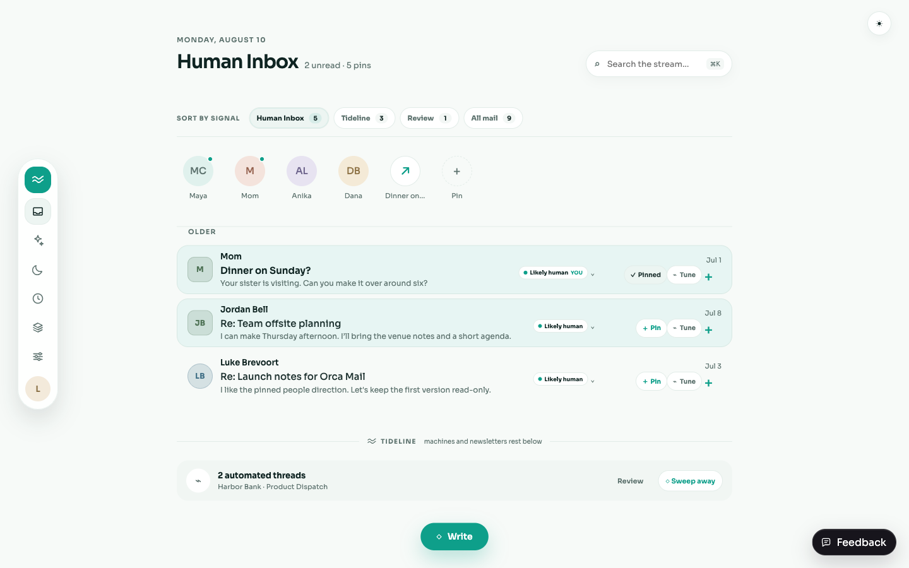
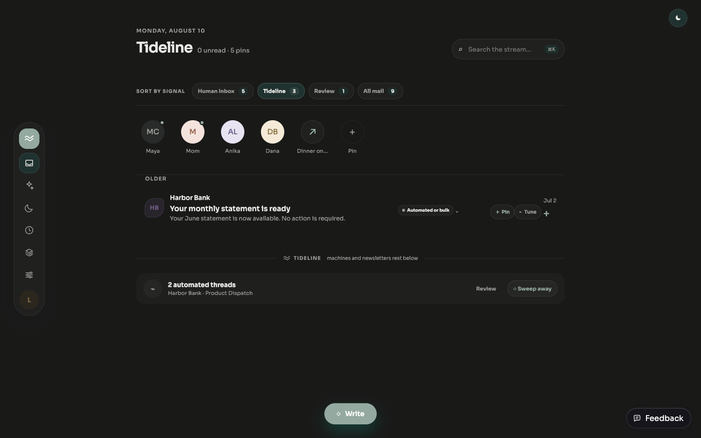
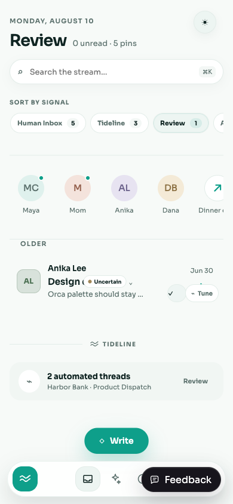
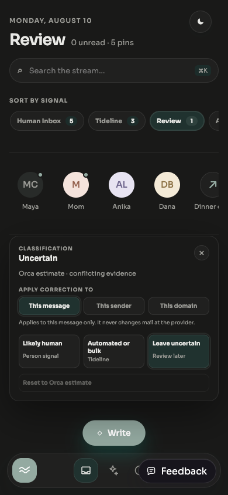

Provider-neutral Human Inbox validation
This guide validates the Gmail and Outlook-normalized fixture path without a live Microsoft tenant grant. It is runnable at /dev/inbox with the local API and Vite app, and it records the boundary between M5's completed provider-neutral behavior and M4's deferred live Outlook approval.
Closeout status
- Shared fixture matrix covers Gmail and Outlook, all four classification states, mixed threads, account/provider attribution, and a user override.
- Classifier, persistence/backfill, API filter/count/cursor, thread detail, account isolation, and web correction tests are automated.
- Classification and correction routes only change Orca's local SQLite state.
- Validation evidence is captured in light and dark themes at wide and narrow viewport sizes.
- Verification commands and their results are recorded below.
Boundary
M5 accepted: deterministic provider-neutral classification is proven using fixtures, Gmail/demo data, and local API state.
M4 deferred: Microsoft tenant approval, live Outlook OAuth login/sync, and provider write verification remain outside this milestone.
There is no claim that the classifier detects AI-written text. It estimates explainable mail-signal evidence only.
Fixture matrix
| Case | Provider / account | Expected automatic state | Expected evidence |
|---|---|---|---|
| Human note | Gmail / acct_m5_gmail | Likely human | Direct recipient |
| Reply | Gmail / acct_m5_gmail | Likely human | Direct recipient + reply context |
| Receipt | Gmail / acct_m5_gmail | Automated or bulk | No-reply pattern + transactional signal |
| Newsletter | Gmail / acct_m5_gmail | Automated or bulk | List headers + promotions signal |
| Conflicting reply | Gmail / acct_m5_gmail | Uncertain | Reply context conflicts with list evidence |
| Mixed thread: digest | Gmail / acct_m5_gmail | Automated or bulk | List header + bulk signal |
| Mixed thread: personal reply | Gmail / acct_m5_gmail | Likely human | Direct recipient + reply context |
| Corrected alert | Gmail / acct_m5_gmail | Automated automatically; likely human effectively | Account-scoped message override |
| Human note | Outlook / acct_m5_outlook | Likely human | Direct recipient |
| Legacy unknown | Outlook / acct_m5_outlook | Unclassified | Insufficient evidence |
Expected effective API counts for this matrix: likely_human=5, automated_or_bulk=3, uncertain=1, unclassified=1, all=10.
Automated verification
bun install --frozen-lockfile
bun run typecheck
bun run test
bun run build
bun run lint
# Focused fixtures and API checks
bun --cwd packages/shared test
bun --cwd apps/api test src/classification/human-signal.test.ts src/index.test.ts
bun --cwd apps/web test
bun run test:smoke| Check | Result | What it proves |
|---|---|---|
bun run typecheck | PASS | Shared, API, and web TypeScript contracts compile. |
bun run test | PASS | Provider normalization, classifier, persistence, API, and UI tests pass without live provider access. |
bun run build | PASS | Production API and web bundles build. |
bun run lint | PASS | Repository type-level lint scripts pass. |
bun run test:smoke | PASS | Smoke coverage exercises the local API and browser-facing fixture path. |
Start the local path
bun run dev:api # http://localhost:3000
bun run dev:web # http://localhost:5173
# Open http://localhost:5173/dev/inboxThe development route uses local fixtures and does not require Google or Microsoft approval. Production builds retain the normal session gate.
Recovery
- If the API is unavailable, stop both processes, run
bun install --frozen-lockfile, then restart the API before the web app. - If the database schema is stale, run
bun --cwd apps/api run db:migrateand reopen/dev/inbox. - If a browser state is stale, clear site storage for localhost and reload; fixture data is local and safe to recreate.
- A failed live Outlook OAuth attempt is not an M5 failure; record tenant approval as the M4 follow-up and rerun this guide locally.
Manual scenarios
| Scenario | Steps | Expected result |
|---|---|---|
| Human Inbox | Open /dev/inbox; leave Human Inbox selected. | Likely-human rows are visible, including the mixed thread's personal reply. |
| Tideline | Select Tideline. | Transactional, newsletter, and bulk rows appear; personal rows are absent. |
| Review / Uncertain | Select Review. | Conflicting evidence and unclassified legacy mail are both recoverable. |
| All mail | Select All mail. | All rows remain visible and account/provider attribution is preserved. |
| Search inside a view | Type a sender or subject in the search field while each tab is selected. | Search narrows the currently rendered view and does not broaden the server classification filter. |
| Mixed thread | Open Re: Team offsite. | Both automated and personal messages remain in chronological order with per-message classification. |
| Correction and reset | Open a classification badge, choose message/sender/domain scope, save a new class, then choose Reset to Orca estimate. | The effective label changes locally, the automatic assessment remains available, and reset restores it. |
| Local sweep | Use the visible organizer/local attention control on a fixture sender, then undo or reset it. | The local view changes reversibly; no provider archive, delete, or label request is made. |
| Provider safety | Inspect the browser network panel while filtering, correcting, resetting, and sweeping. | Only Orca local API routes are called; Gmail and Outlook provider mail are untouched. |
Review evidence
These images are captured from the running app, not a static mock. They cover Human Inbox, Tideline, Review, and correction states at wide/narrow sizes and in both themes.




Dispatch media is pinned with the BRE-252 verification handoff. A screenshot is evidence of visual state only; the automated commands above remain the source of truth for code correctness.
Final safety checklist
- Classification filtering is account-scoped and provider-neutral.
- User corrections and reset operations are account-scoped and reversible.
- Mixed threads retain per-message classification instead of collapsing to a thread-level label.
- No M5 route archives, deletes, sends, renames, or labels provider mail.
- Live Microsoft login/sync/write verification is explicitly deferred pending tenant approval.